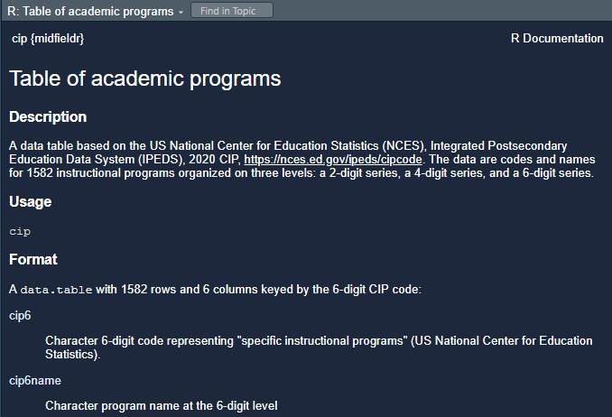

7 Data basics
Big Data Higgs by KamiPhuc is licensed under CC BY 2.0
7.1 Introduction
This tutorial is an introduction to data preparation using the data.table package for importing, exploring, and structuring data. Our goal is to transform, reshape, and join data frames to obtain the form we need for analysis and graphs.
Prerequisites should be completed before proceeding. After that, the tutorial should take about an hour.
- As you work through the tutorial, type a line or chunk of code then File > Save and run the script.
- Confirm that your result matches the tutorial result.
- The exercises give you chance to practice your new skills to learn by doing (but you knew that already)!
7.2 Start a new script
Create a new script for this tutorial.
- See Create a script if you need a refresher on creating, saving, and running an R script.
- At the top of the script add a minimal header and install and load the packages indicated.
# Data basics
# Name
# Date
# Packages used in this tutorial
library("midfieldr")
library("midfielddata")
library("data.table")
library("VIM")
# Optional code to control data.table printing
options(
datatable.print.nrows = 10,
datatable.print.topn = 5,
datatable.print.class = TRUE
)
# Load midfielddata data sets to use later
data(student)
data(term)
data(degree) If you get an error like this one after running the script,
Error in library("VIM") : there is no package called 'VIM'then the package needs to be installed. If you need a refresher on installing packages, see Install CRAN packages. Once the missing package is installed, you can rerun the script.
7.3 Data sets in R
Practice data sets are included with the basic R installation and with some R packages. To list the practice data sets available in R, type in the Console,
# Type in the Console
data() which yields
#> Data sets in package ‘datasets’:
#>
#> AirPassengers Monthly Airline Passenger Numbers
#> BJsales Sales Data with Leading Indicator
#> BOD Biochemical Oxygen Demand
#> CO2 Carbon Dioxide Uptake in Grass Plants
#> Formaldehyde Determination of Formaldehyde
etc.We use the data() function to list practice datasets included in a package (if any). For example, to determine what packages are bundled with the midfieldr package, type in the Console,
# Type in the Console
data(package = "midfieldr") which yields
#> Data sets in package ‘midfieldr’:
#>
#> cip Table of academic programs
#> fye_start Starting programs imputed for FYE students
#> study_grad_rate Case-study graduation rate results
#> study_program Case-study programs
#> study_stickiness Case-study stickiness results
#> study_student Case-study students
#> toy_course Course data for examples
#> toy_degree Degree data for examples
#> toy_student Student data for examples
#> toy_term Term data for examplesEvery data set in base R and in R packages has a help page that describes the data format and variable names. The data help page can be accessed using help(), for example,
# Type in the Console
help(cip, package = "midfieldr")Alternatively, if the package is loaded, you may run the ? item-name syntax in the Console,
# type in the Console
library("midfieldr")
? cipyields

7.3.1 Exercises
Determine the names of the datasets available in the midfielddata package.
Determine the variables in the midfieldr
study_stickinessdata.Determine the variables in midfielddata
degreedata.
7.4 Data structure
When we encounter a data set, the first step is to characterize its structure including,
- class
- The class of the R data object, for example, vector, matrix, data frame, time series, list, etc. The R data frame is the structure we use most often, typically in the enhanced
data.tableform. For data frames, we are also interested in the class of each column. - layout
- How tables, rows, and columns are organized and keyed with unique and invariant coordinates to data cells. Most data processing steps have a preferred format, so we have to be able to identify and transform layouts as needed.
The most common data layout we use is the denormalized form (what many R users recognize as the “tidy” form) with variables in columns, observations in rows, and a clear taxonomy of column roles: some columns are keys (i.e., coordinates that uniquely identify the row), one or more columns are data (called “payload” in SQL), and some columns may be derived (functions of other columns).
For example, if we examine the first 5 rows of the term data (ordered by ID and term),
term[order(mcid, term)][1:5]
#> mcid institution term cip6 level standing coop
#> <char> <char> <char> <char> <char> <char> <char>
#> 1: MID25783135 Institution M 19911 520101 01 Freshman Good Standing No
#> 2: MID25783135 Institution M 19913 520101 02 Sophomore Good Standing No
#> 3: MID25783147 Institution M 20041 131202 01 Freshman Good Standing No
#> 4: MID25783147 Institution M 20043 131210 02 Sophomore Good Standing No
#> 5: MID25783147 Institution M 20051 131210 02 Sophomore Good Standing No
#> hours_term hours_term_attempt hours_cumul hours_cumul_attempt gpa_term
#> <num> <num> <num> <num> <num>
#> 1: 19 19 19 19 2.47
#> 2: 14 14 33 33 3.21
#> 3: 17 13 17 13 3.76
#> 4: 18 18 35 31 2.67
#> 5: 15 15 50 46 3.20
#> gpa_cumul
#> <num>
#> 1: 2.47
#> 2: 2.79
#> 3: 3.76
#> 4: 3.13
#> 5: 3.15- Keys are
mcidandterm.
- Column
institutionis derived (assuming the student is affiliated with one institution only) because it is a function of student ID. - The remaining variables are data.
- Column
gpa_cumulis class numeric (double-precision); all other columns are class character (strings).
Applying a similar procedure to the aggregated study_stickiness data set loaded with midfieldr,
study_stickiness
#> program race sex ever grad stick
#> <char> <char> <char> <int> <int> <num>
#> 1: Civil Asian Female 17 12 70.6
#> 2: Civil Black Female 54 28 51.9
#> 3: Civil White Female 329 232 70.5
#> 4: Civil Asian Male 37 24 64.9
#> 5: Civil Black Male 98 43 43.9
#> ---
#> 34: Mechanical Hispanic/Latinx Male 76 47 61.8
#> 35: Mechanical International Male 37 19 51.4
#> 36: Mechanical Native American Male 14 8 57.1
#> 37: Mechanical Other/Unknown Male 48 28 58.3
#> 38: Mechanical White Male 1940 1265 65.2- Keys are
program,race, andsex. - Number enrolled (
ever) and number graduating (grad) are data. - Program stickiness (
stick) is derived (the ratio ofgradtoever). - The key columns are class character;
everandgradare class integer; andstickis class numeric (double-precision).
7.4.1 Exercises
The following midfieldr/midfielddata data frames are all in denormalized form. For each, identify their key(s), data, and derived (if any) columns.
cip
study_student
student
course
degree
7.5 What is a data.table?
In our tutorials and in our package functions, we manipulate data using the data.table package, primarily for its speed with large tables but also for its concise syntax and its zero dependencies. Thus, when you use a midfieldr function to operate on a data frame, the returned data frame is also a data.table object.
For R beginners, we try to keep our use of data.table in tutorials to an introductory level, though we will occasionally use a more complex syntax when the benefit is worth the cognitive load.
What is a data.table? The data.table cheat sheet defines data.table this way:
{kind=link}
data.table is an extremely fast and memory efficient package
for transforming data in R. It works by converting R’s native
data frame objects into data.tables with new and enhanced
functionality. The basics of working with data.tables are:DT[i, j, by]
Take data.table DT, subset rows using i and operate
on columns with j grouped according to by.data.tables are also data.frames—functions that work with
data.frames therefore also work with data.tables.
7.6 Subset rows
ina.omit()%chin%,%ilike%
Typically we create a Boolean statement to subset rows. A row is retained if the statement yields TRUE for that row and dropped in the statement yields FALSE.
For example, if we wanted to subset term for all rows for a particular student, we write (in data.table fashion)
# Subset all term data for one student by their ID
DT <- term[mcid == "MID25836044"]
# Examine the result
DT
#> mcid institution term cip6 level standing coop
#> <char> <char> <char> <char> <char> <char> <char>
#> 1: MID25836044 Institution M 20001 140102 01 Freshman Good Standing No
#> 2: MID25836044 Institution M 20003 140102 01 Freshman Good Standing No
#> 3: MID25836044 Institution M 20011 140801 02 Sophomore Good Standing No
#> 4: MID25836044 Institution M 20013 140801 02 Sophomore Good Standing No
#> 5: MID25836044 Institution M 20021 140801 03 Junior Good Standing No
#> 6: MID25836044 Institution M 20023 140801 03 Junior Good Standing No
#> 7: MID25836044 Institution M 20025 140801 04 Senior Good Standing No
#> 8: MID25836044 Institution M 20031 140801 04 Senior Good Standing No
#> 9: MID25836044 Institution M 20033 140801 04 Senior Good Standing No
#> hours_term hours_term_attempt hours_cumul hours_cumul_attempt gpa_term
#> <num> <num> <num> <num> <num>
#> 1: 11 15 11 15 3.07
#> 2: 15 15 26 30 3.80
#> 3: 15 15 41 45 2.93
#> 4: 12 15 53 60 2.86
#> 5: 16 16 69 76 3.13
#> 6: 16 16 85 95 3.06
#> 7: 7 7 92 99 3.00
#> 8: 15 15 107 114 3.00
#> 9: 15 15 122 129 3.20
#> gpa_cumul
#> <num>
#> 1: 3.07
#> 2: 3.43
#> 3: 3.26
#> 4: 3.16
#> 5: 3.15
#> 6: 3.13
#> 7: 3.13
#> 8: 3.11
#> 9: 3.12If we wanted to extract the same student’s data from all the MIDFIELD tables, we can assign the ID to a name,
mcid_we_want <- "MID25836044"
student[mcid == mcid_we_want]
#> mcid institution transfer hours_transfer race sex
#> <char> <char> <char> <num> <char> <char>
#> 1: MID25836044 Institution M First-Time in College NA White Female
#> age us_citizen home_zip high_school sat_math sat_verbal act_comp
#> <num> <char> <char> <char> <num> <num> <num>
#> 1: 17 Yes 29469 411425 690 596 27
degree[mcid == mcid_we_want]
#> mcid institution term cip6 degree
#> <char> <char> <char> <char> <char>
#> 1: MID25836044 Institution M 20033 140801 Bachelor of ScienceBecause a row-subset argument can have multiple clauses, we often construct the Boolean statement on its own line to promote clarity. In this case we must use the df$col syntax, where df = name of the data.frame and col = name of the column in the data frame.
# Create a TRUE/FALSE vector with as many entries as term has rows
rows_we_want <- term$mcid == "MID25836044" & term$cip6 == "140102"
# Examine the result
str(rows_we_want)
#> logi [1:727369] FALSE FALSE FALSE FALSE FALSE FALSE ...
# Confirm the TRUE/FALSE vector has as many entries as term has rows
nrow(term)
#> [1] 727369If the argument returns TRUE for a row, that row is retained, otherwise it is dropped.
# Retain rows for which rows_we_want is TRUE
DT <- term[rows_we_want]
# examine the result
DT
#> mcid institution term cip6 level standing coop
#> <char> <char> <char> <char> <char> <char> <char>
#> 1: MID25836044 Institution M 20001 140102 01 Freshman Good Standing No
#> 2: MID25836044 Institution M 20003 140102 01 Freshman Good Standing No
#> hours_term hours_term_attempt hours_cumul hours_cumul_attempt gpa_term
#> <num> <num> <num> <num> <num>
#> 1: 11 15 11 15 3.07
#> 2: 15 15 26 30 3.80
#> gpa_cumul
#> <num>
#> 1: 3.07
#> 2: 3.43The commonly used Boolean operators are equal to (==), not equal to (!=), and (&), or (|), less than (<), greater than (>), less than or equal to (<=), and greater than or equal to (>=).
7.7 Select columns
7.8 Operate on columns
- delete
- create
- apply function
7.9 Grouping
- by
- .SD